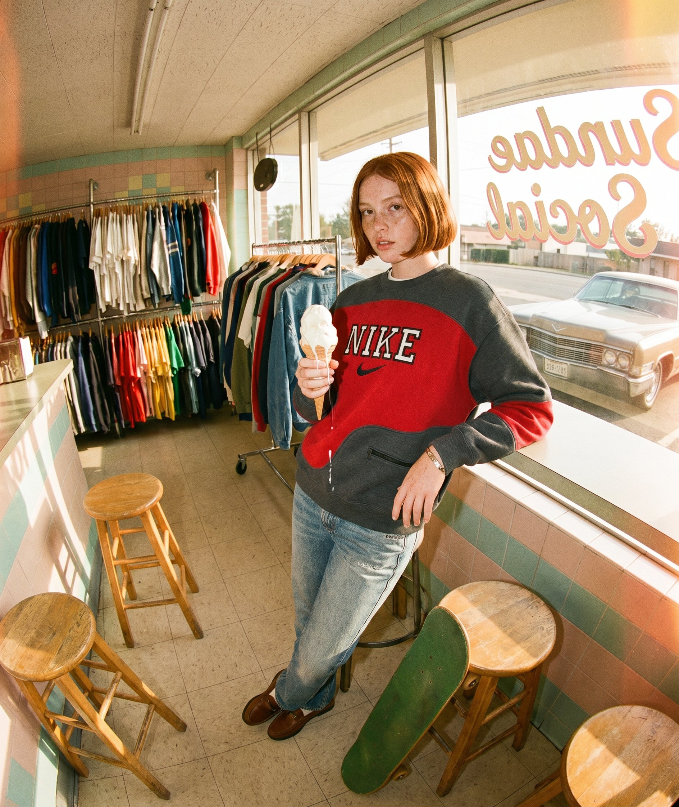
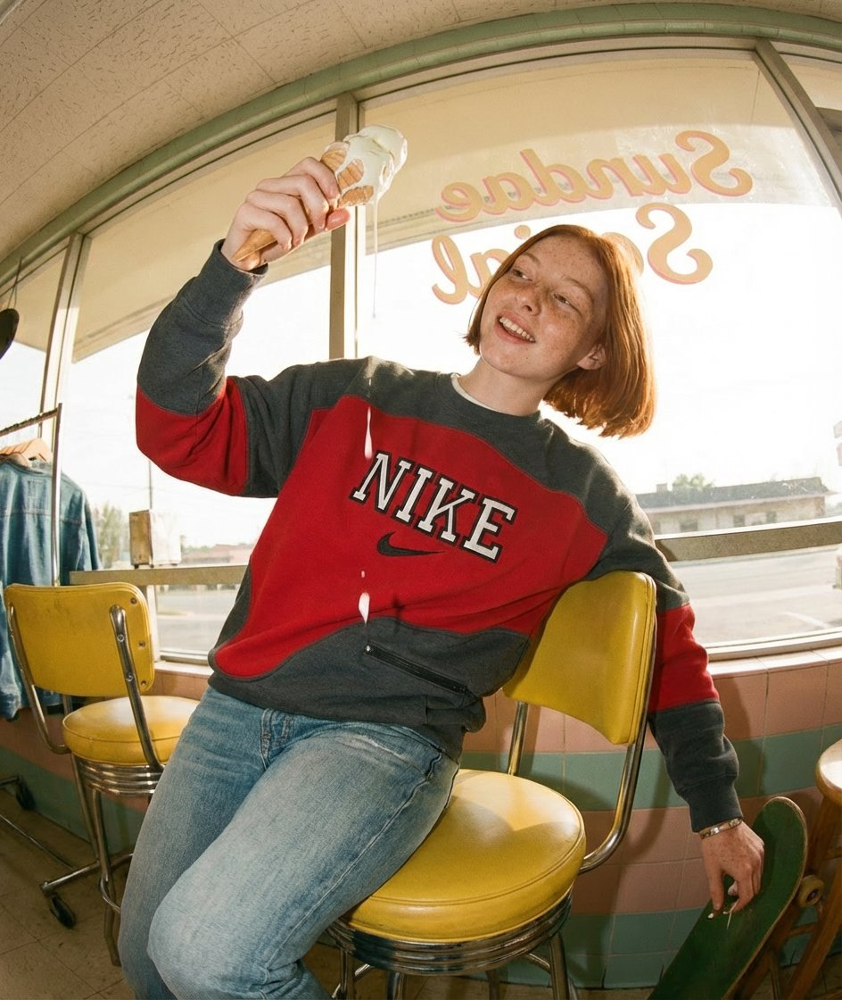
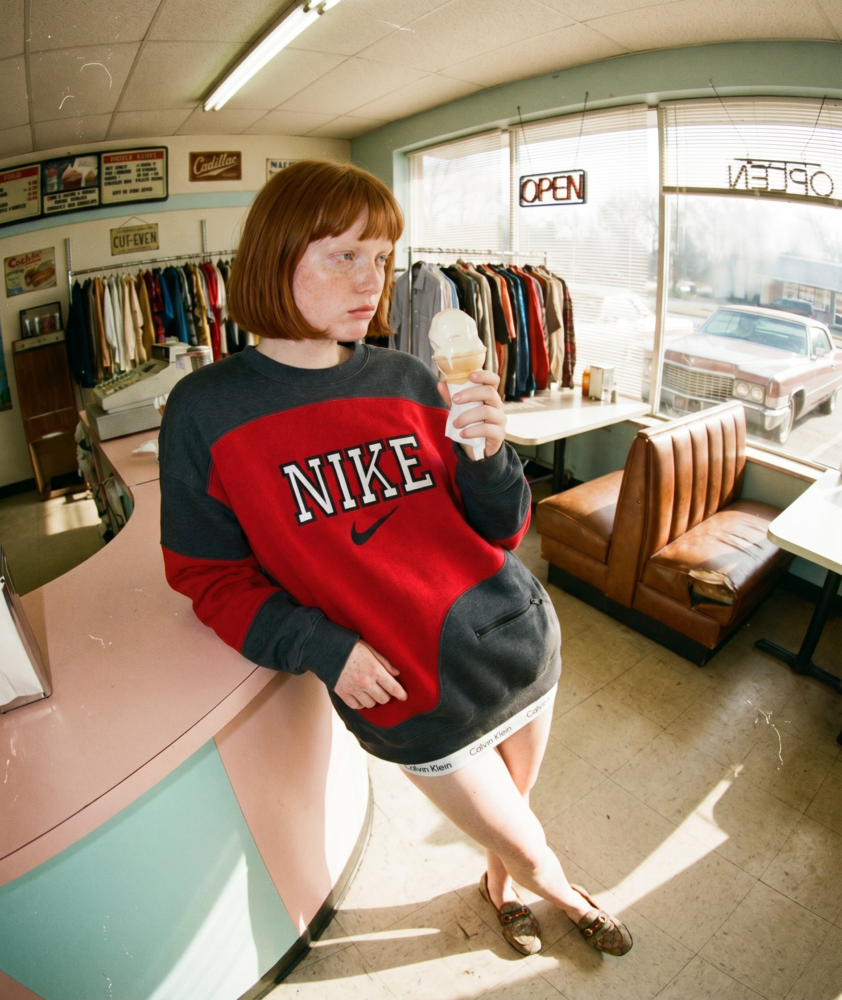
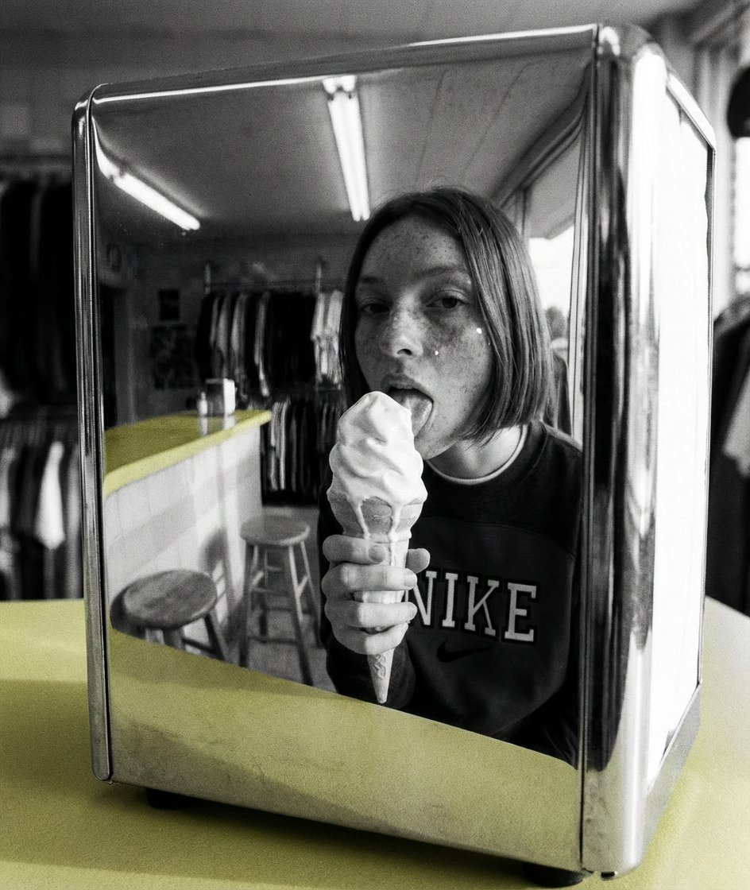
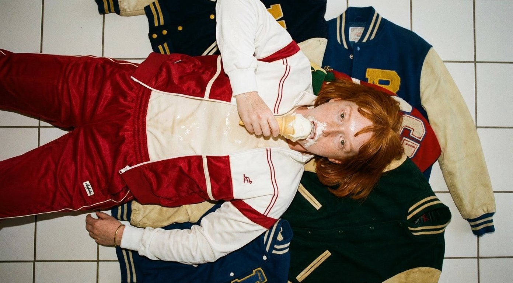
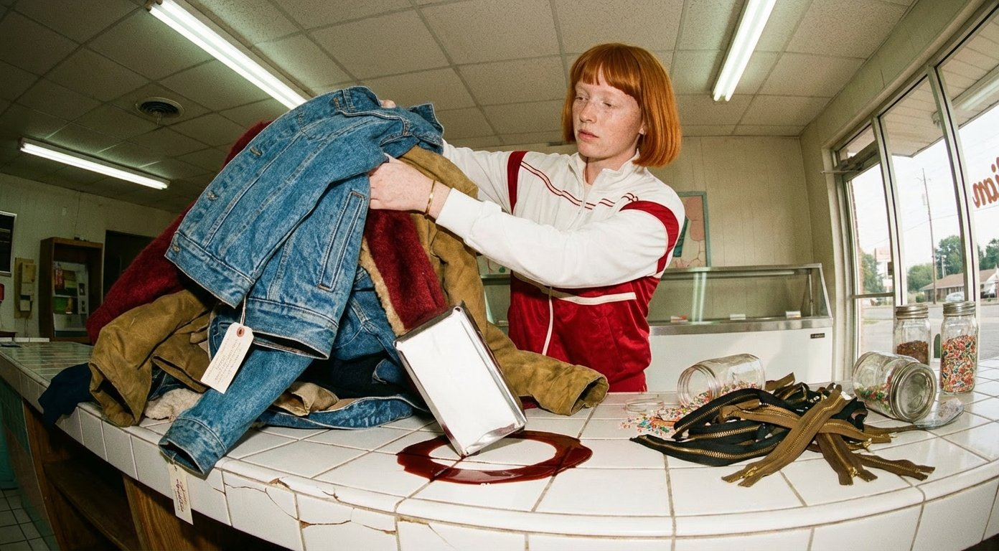
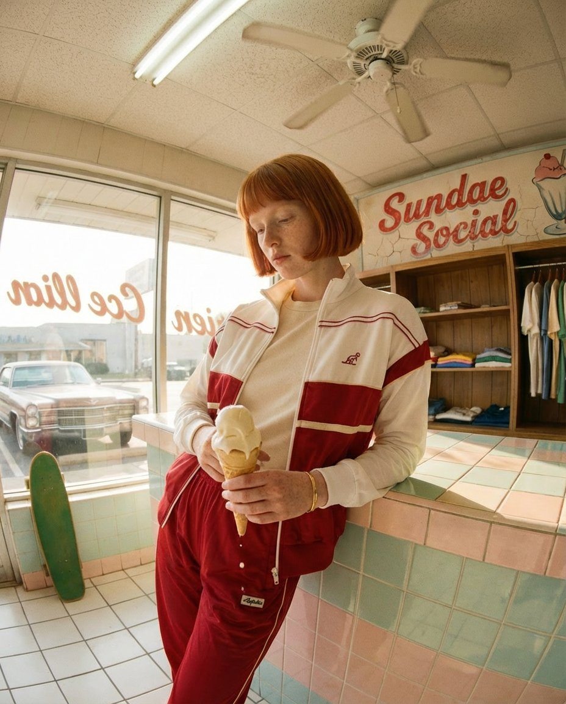

Plate 01 — Storefront, fisheye
Tri-X 400 / natural light
A Koboku field-study on the rise of the Analog Slacker — and how AI creative direction now builds the worlds that old-school vintage shops have always felt like, but rarely looked like.
In a saturated digital fashion landscape, "vintage" is no longer a category. It's a mood.
To stand out, brands are moving away from sterile studio shots and embracing a creative direction that feels lived-in, raw, and unapologetically apathetic. This is the rise of the Analog Slacker — a world where heritage pieces meet suburban kitsch, and where the subject looks less like a model and more like someone who just happened to be there.
For a curated vintage shop, the brief is no longer "shoot the garment." It's "build the afternoon it belongs to."


The shift from traditional photography to AI creative direction has opened hyper-specific world-building. Film stocks like Kodak Tri-X 400 and Kodachrome can be simulated down to their grain structure. Lenses can be specified — a 16mm fisheye, an 85mm portrait — and the subject embedded in a weather, a decade, a ZIP code.
In Sundae Social, our campaign bible for this editorial, we recreate the sun-baked haze of a 1960s Midwestern afternoon. The goal is sensory: to make the viewer feel the heat on the counter, the stickiness of a melting vanilla cone, and the faded cream of a Nike sweatshirt that has outlived three owners.

What defines the AI art direction for a vintage powerhouse is the gap between what the subject is wearing and how little she seems to care. That's where taste lives.
Oversized 90s silhouettes — Nike, Calvin Klein — paired with luxury legacy accessories: a Cartier watch, a Gucci loafer. Heritage stacked on heritage.
Effortlessly aloof. The effort is hidden. An ironic detachment from the luxury she wears — as if the watch was a hand-me-down, because emotionally it was.
Moss green #31651D and sun-ochre #DEC9A7, interrupted by Punch Cherry Red signage #C1302C. Nothing else.

By removing modern technology from the frame, the vintage shop's products become the only bridge between the past and the present.


To achieve this look — via AI prompt or real film — the optics are not negotiable. A 16mm fisheye creates an environmental portrait: the subject is embedded in her habitat, not isolated from it.
A shallow depth of field at f/2.8 keeps the focus on the messy details — a melting ice cream drip, a zipper tooth, a tag — while the background dissolves into a nostalgic, hazy memory. Grain is not a filter. It's structural.

★ Koboku studio — Utrecht, 2026
The spiritual home of the project. Smaller, slower, and richer in second-hand character than Amsterdam — Utrecht's canal-side vintage shops and kringloopwinkels define the Dutch resale aesthetic.
⚠ Editorial selection — verify addresses and opening hours before visit.
Modern vintage retail sells a lifestyle of nothing to do and nowhere to wear it. We make that look beautiful.
— Koboku Studio
We build campaign bibles, visual systems, and full AI-directed editorials for vintage and second-hand brands that refuse to look like everyone else. If that's you, get in touch.
utrecht@koboku.it →